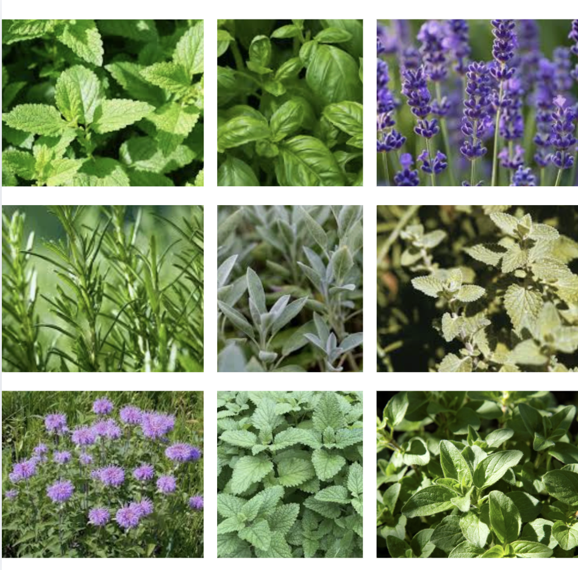

This project will analyze partial coding sequences of the ribulose-1,5-bisphosphate carboxylase/oxygenase large subunit (rbcL) gene of various plant species in the Lamiaceae family. It uses DNA sequences from the NCBI GenBank to compute and display biological statistics including number of base pairs, nucleotide composition (visualized with matplotlib pie chart), GC content percentage, codon signal analysis, DNA barcode visualization, and similarity percentages between the plants' sequences. The Python program will generate an HTML webpage with forms where a user can choose the plant to analyze and the plant to compare it to. Additionally, there's an index page containing a description of the project and relevant biological concepts and an image of the plants that the user could analyze.
Caterina Simi, period 9. Skills: 32, 31, 26, 12, 11, 7
DNA (deoxyribonucleic acid) is the molecule that stores genetic information in living organisms. It is made up of four nucleotide bases: adenine (A), thymine (T), cytosine(C), and guanine(G). On the complementary strand, A pairs with T and C pairs with G. The order of these bases encodes instructions for building proteins and regulating biological functions. DNA sequences are read in segments called genes, which are transcribed and translated into proteins that determine traits and biological processes.
rbcL is a gene commonly used for distinguishing plants at the family and genus level. This gene encodes the large subunit of RuBisCO (ribulose-1,5-bisphosphate carboxylase/oxygenase), an enzyme crucial for carbon fixation in photosynthesis. RuBisCO binds the carbon dioxide to a 5 carbon sugar, RuBP, which is then used in the Calvin Cycle to synthesize carbohydrates.
Note: the DNA sequence for bergamot contains an unidentified base, represented with the letter N. It was not removed from the sequence and therefore contributes to the discrepancy between the GC Content and the sum of the individual percentages of G and C.
Herb species from the Lamiaceae (mint) family available in this DNA analysis tool. Left to right from top to bottom: mint, basil, lavender, rosemary, sage, catnip, bergamot (aka bee balm), lemon balm, oregano.
